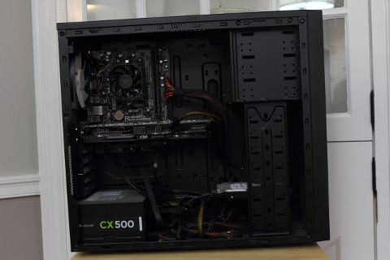

The purpose of these guides is to teach you how to preform basic maintenance tasks on
your personal computer. After reading these guides you should be able to open and
clean your computer with confidence, knowing that you accomplished these tasks
yourself instead of having a friend or relative do it, or spend time and money in
bringing your personal computer into a computer repair shop.
To use these guides, simply continue reading through the rest of the guide and
follow along with the steps as you complete the tasks (if you can have this page
open while you are working on your computer while it is unplugged,) or print this
page out and follow the steps as listed then save the guide for later use if needed.
The Basics
In this guide you will learn how to safely unplug and open your computer case. If you
do not feel comfortable opening up your personal computer (voiding the warranty) then
this guide does not have much to offer you.
What you will need:
A computer
A hand screwdiver
A flashlight
A camera, or paper and a pencil/pen
The ability to lift at least twenty pounds
A sense of adventure
Overview
Save Your Work
Turn Off Computer
Safely Move to Back of Computer Case
Discharge Static Electricity
Locate Power Cable
Flip Switch on Power Supply to Off Position
Start Gently Removing Peripheral Cables
Remove Power Cable
Carefully Slide Computer Away from Desk
Set Computer Down on Hard Surface
Locate Back of Computer Case
Remove Thumb Screws
Open Computer Case
The Procedure
Save Your Work
We all hate it when our computers lock up and force us to
restart. Its even worse when working on something important. However,
this time around we have a chance to save our work before we shut down
our computer. It helps to save often anyway.
Turn Off Computer
Turn off your computer by using the system appropriate
method for beginning the shut down procedures on your computer.
For example, on computers running Microsoft Windows, the option to
shut down is found in the start menu (the button in the lower-left
corner of the screen in standard desktop arrangements.)
Safely Move to Back of Computer Case
Once your computer has shut down we can begin this step. We
need to get to the back of the computer case so we can unplug all of
the cables that make all the things run. It is
important to keep your safety in mind when doing this, especially if
your computer is in a hard to reach place.
Discharge Static Electricity
Electrostatic discharge (ESD) is an enemy of electronics and
your computer is no exception. Don't skip this step!
Avoid frying your expensive computer by touching a metallic surface,
even the outside of your computer case will work while it is plugged
in. Your computer case offers grounding protection: it redirects
electronically harmful amounts of electricity away from the electronics
inside and into the ground (dirt.)
Locate Power Cable
The power cable is generally a large, black, and fairly
unflexible cable that connects from a wall power outlet or a power
strip to your computer case to provide it the power it needs to run.
The cable has a large amount of insulation on the outside and hefty
end connector plugs. Beware of cracks or splits in
the power cable. These are gaps in the insulation of the power cable
that can expose you to dangerous levels of current. Do not proceed any
further with this guide and replace the power cable immediately!
Locate the end of the power cable that plugs into your computer case.
This will give you a good idea of where the power supply is located in
your computer case.
Flip Switch on Power Supply to Off Position
We recommend taking a picture of what things
look like on the back of your computer case, specifically where cables
are plugged in to the computer. If you cannot take a picture then
take a piece of paper and draw where things are plugged in.
By flipping the switch on the back of your power supply to the off
position, you still get the potection of the grounding but you do not
have to worry about power flowing into your computer.
Start Gently Removing Peripheral Cables
Start removing the cables other than the power cable (we will
remove that one last.) Always pull the cable out using
the connector - never pull a cable out using the cable itself. If the
cable does not slide out with minimal effort, do not force it out. Try
inspecting the cable connector for a locking or latching mechanism and
then unlock or unlatch it before pulling it out using the connector.
Remove Power Cable
Now for the last cable. Remove the power cable by pulling on
the connector.
Carefully Slide Computer Away from Desk
Time to come up for some air and slide the computer out from it
spot under the desk. Grasp sturdy points on the computer case and pull
toward you to dislodge it from its spot. Take care not
to force the computer out of its spot too hastily to avoid scratching
the paint on the computer case or damaging the delicate hardware
inside (or damaging your desk.)
Set Computer Down on Hard Surface
Its time for more physical activity. If you
do not feel comfortable lifting at least twenty pounds please ask for
assistance. Make sure to lift with your legs rather than your back -
squat rather than bend your back to lift. Recall that
electrostatic discharge is the enemy of electronics. Gently put the
computer down on a hard surface like a hardwood floor in a place where
you can reach the computer case with comfort. Be sure
to discharge any static that you may have built up on a metallic
surface other than your computer case this time (remember its not
plugged in anymore - that static electricity has no where to go.)
Locate Back of Computer Case
This should be fairly easy - its the side of the computer case
you removed all those cables from earlier.
Remove Thumb Screws
Remove the two screws on the back of the computer case toward
the right side. There should be a screw toward the top-right and a
screw toward the bottom-right. While many computer
cases are fitted in this way, using screws to secure the side panel,
not all are. If your's differs then you will have to figure out how to
open your computer case up.
Open Computer Case

Finally, we arrive at the end at long last. The side panel may
have popped free already in which case it just did that work for you!
Otherwise, you will have to open it up. Many computer cases' side
panels come free by sliding the panel toward the back of the case then
come off at an angle. Try to play around with
different methods of removing the side panel if this is not the case,
but do not try to force the side panel off. Once you are ready
to put your computer back in place follow the steps in this guide
backwards.
The End Result
In this guide you learned how to safely unplug and open your computer case. You learned
about the safety precautions to take when dealing with computer hardware and how to
mitigate those problems. Congratulations, you have taken your first steps toward
becoming more computer savvy and literate! Well down!